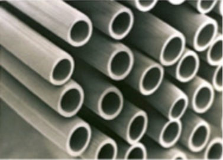
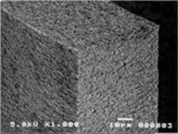
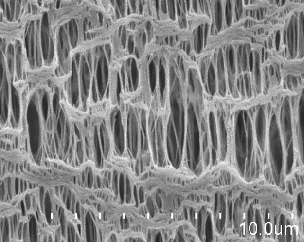
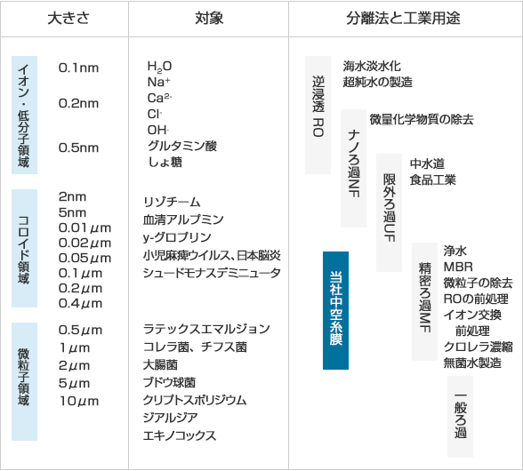

特長
- PEで作られた中空糸膜は、柔軟性が高く屈曲に対する耐久性に優れています。また、使用後には、サーマルリサイクルも可能で環境にやさしい製品です。
- 多重対称膜構造にすることで、長期間の使用でも安定した分離性能を維持できます。
- 水処理、水ろ過用途へは、輸送性、取扱性に優れた恒久親水化膜を採用し、突発的な膜の乾燥にも再親水化処理は必要ありません。
- 除菌、除粒子用のエアろ過フィルタや水ろ過フィルタ用のエア抜き機構には疎水膜を使用しています。
- 中空糸膜は、容積効率が高く、よりコンパクトな装置設計を可能にします。
主な使用用途
下水・排水用途では、膜分離活性汚泥法(Membrane Bioreactor,MBR)や、無機・金属処理用固液分離、水再利用向け高度処理等に使用されています。
浄水用途では、上水道、地下水・工業用水の飲適化、工程水・ボイラー水・洗浄用水・冷却水等の処理、RO・イオン交換樹脂・活性炭の前処理、仕込水・無菌海水の製造等に使用されています。
除菌・徐粒子塵を目的とした水およびエアろ過フィルタ膜の機器への組込み用途として、理化学分野では卓上型純水装置, 医療分野では臨床検査装置、無菌水製造装置、電子分野ではパーティクルカウンター、クリーンエアの製造ラインやエアベント部等、様々な産業分野に使用されています。

中空糸膜外観

中空糸膜断面図

中空糸膜外表面
当社中空糸膜と分離対象物質
